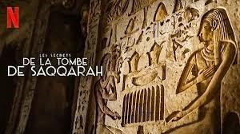

<section class="article-netflix py-5">
  <div class="container">
    <div class="row">
      <article class="">
        <h2>Les secrets de la tombe de Saqqarah</h2>
        <h5>Une tombe vieille de 4400 ans découverte très bien préservée en Egypte. Elle a été mise à jour par des archéologues sur le site de Saqqarah. Située cinq mètres sous le sable, cette tombe referme des secrets incroyables, 10 mars 2020</h5>

        <p>
          Film documentaire sorti en 2020 pour un public de plus de 13 ans - durée 1h54
        </p>

        <div class="article_img">
          
        </div>

        <p>
          <strong class="emphase">Ma critique: </strong> Ces derniers jours, comme beaucoup j’avais le moral dans les chaussettes avec toute cette actualité mega anxiogène sur la pandémie. Je n’avais pas envie de suivre une série ou un film, j’avais envie de voyager, m’évader et de waouuu. Après une brève recherche je tombe sur un film documentaire : Les secrets de la tombe de Saqqarah.
        </p>

        <p>
          Aussitôt le documentaire lancé, la magie a opéré et le voyage dans le temps a été immédiat et salvateur. L’Égypte, sa grande Histoire millénaire, ses pyramides, ses paysages sublimes (entre palmeraie et désert), sa population souriante, accueillante et surtout ses nombreux secrets enfouis sous le sable depuis 4 000 ans pour certains. Là, il s’agit de comprendre le mystère du tombeau de Wah-ti, grand personnage de l’Égypte ? Usurpateur ?
        </p>

        <p>
          L’énigme est palpitante, les indices et protagonistes sont nombreux mais le décodage est complexe et il faut faire appel à de multiples spécialistes locaux de cette période pharaonique très évoluée et mystérieuse pour tenter toutes les approches possibles. J’ai dévoré ce documentaire, j’ai réussi à m’évader complètement durant 2h et j’ai renforcé ma culture et mon ouverture d’esprit sur d’autres civilisations qui aujourd’hui nous interrogent sur nos propres capacités à faire aussi bien et beau qu’il y’a 4 000 ans.
        </p>

        <p>
          Je vous recommande ce documentaire. Si vous avez des enfants, cela leur fera une véritable leçon d’histoire à la maison tout en partageant ce moment avec vous durant le couvre-feu.
          <br>
          À vos Netflix et gardez la santé et le moral
        </p>

        <iframe width="560" height="315" src="https://www.youtube.com/embed/i9tOepQ6Op4" frameborder="0" allow="accelerometer; autoplay; clipboard-write; encrypted-media; gyroscope; picture-in-picture" allowfullscreen></iframe>

        <p class="signature text-end"><strong>Charly</strong></p>
      </article>

    </div>

  </div>

</section>


